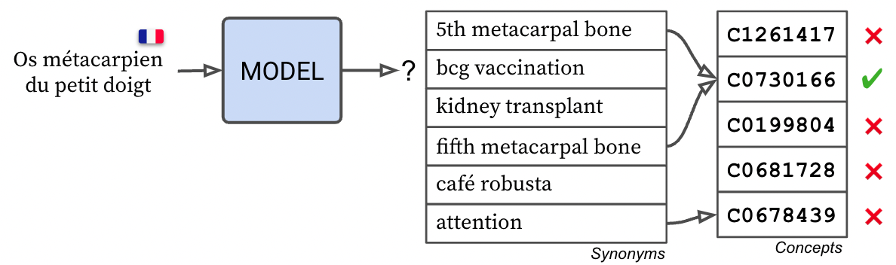
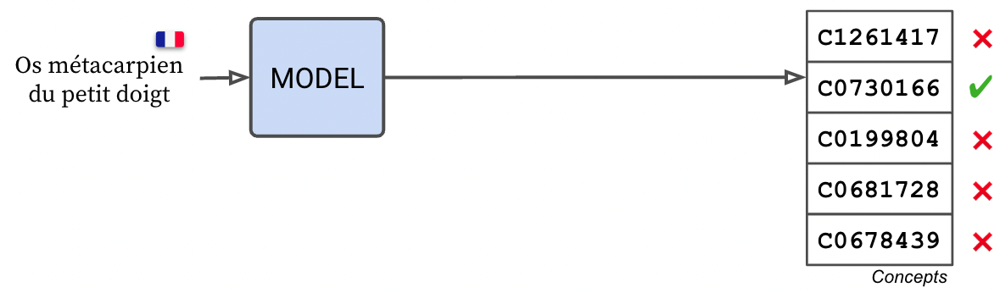

Trainable Span Linker[source]
The eds.span_linker component is a trainable span concept predictor, typically used to match spans in the text with concepts in a knowledge base. This task is known as "Entity Linking", "Named Entity Disambiguation" or "Normalization" (the latter is mostly used in the biomedical machine learning community).
Entity Linking vs Named Entity Recognition
Entity Linking is the task of linking existing entities to their concept in a knowledge base, while Named Entity Recognition is the task of detecting spans in the text that correspond to entities. The eds.span_linker component should therefore be used after the Named Entity Recognition step (e.g. using the eds.ner_crf component).
How it works
To perform this task, this components compare the embedding of a given query span (e.g. "aspirin") with the embeddings in the knowledge base, where each embedding represents a concept (e.g. "B01AC06"), and selects the most similar embedding and returns its concept id. This comparison is done using either:
- the cosine similarity between the input and output embeddings (recommended)
- a simple dot product
We filter out the concepts that are not relevant for a given query by using groups. For each span to link, we use its label to select a group of concepts to compare with. For example, if the span is labeled as "drug", we only compare it with concepts that are drugs. These concepts groups are inferred from the training data when running the post_init method, or can be provided manually using the pipe.update_concepts(concepts, mapping, [embeddings]) method. If a label is not found in the mapping, the span is compared with all concepts.
We support comparing entity queries against two kind of references : either the embeddings of the concepts themselves (reference_mode = "concept"), or the embeddings of the synonyms of the concepts (reference_mode = "synonym").
Synonym similarity
When performing span linking in synonym mode, the span linker embedding matrix contains one embedding vector per concept per synonym, and each embedding maps to the concept of its synonym. This mode is slower and more memory intensive, since you have to store multiple embeddings per concept, but it can yield good results in zero-shot scenarios (see example below).

Concept similarity
In concept mode, the span linker embedding matrix contains one embedding vector per concept : imagine a single vector that approximately averages all the synonyms of a concept (e.g. B01AC06 = average of "aspirin", "acetyl-salicylic acid", etc.). This mode is faster and more memory efficient, but usually requires that the concept weights are fine-tuned.

Examples
Here is how you can use the eds.span_linker component to link spans without training, in synonym mode. You will still need to pre-compute the embeddings of the target synonyms.
First, initialize the component:
import pandas as pd
import edsnlp, edsnlp.pipes as eds
nlp = edsnlp.blank("eds")
nlp.add_pipe(
eds.span_linker(
rescale=20.0,
threshold=0.8,
metric="cosine",
reference_mode="synonym",
probability_mode="sigmoid",
span_getter=["ents"],
embedding=eds.span_pooler(
hidden_size=128,
embedding=eds.transformer(
model="prajjwal1/bert-tiny",
window=128,
stride=96,
),
),
),
name="linker",
)
We will assume you have a list of synonyms with their concept and label with the columns:
STR: synonym textCUI: concept idGRP: label.
All we need to do is to initialize the component with the synonyms and that's it ! Since we have set init_weights to True, and we are in synonym mode, the embeddings of the synonyms will be stored in the component and used to compute the similarity scores
synonyms_df = pd.read_csv("synonyms.csv")
def make_doc(row):
doc = nlp.make_doc(row["STR"])
span = doc[:]
span.label_ = row["GRP"]
doc.ents = [span]
span._.cui = row["CUI"]
return doc
nlp.post_init(
edsnlp.data.from_pandas(
synonyms_df,
converter=make_doc,
)
)
Now, you can now use it in a text:
doc = nlp.make_doc("Aspirin is a drug")
span = doc[0:1] # "Aspirin"
span.label_ = "Drug"
doc.ents = [span]
doc = nlp(doc)
print(doc.ents[0]._.cui)
# "B01AC06"
To use the eds.span_linker component in class mode, we refer to the following repository: deep_multilingual_normalization based on the work of Wajsbürt et al., 2021.
Parameters
| PARAMETER | DESCRIPTION |
|---|---|
nlp | Spacy vocabulary TYPE: |
name | Name of the component TYPE: |
embedding | The word embedding component TYPE: |
metric | Whether to compute the cosine similarity between the input and output embeddings or the dot product. TYPE: |
rescale | Rescale the output cosine similarities by a constant factor. TYPE: |
threshold | Threshold probability to consider a concept as valid TYPE: |
attribute | The attribute to store the concept id TYPE: |
reference_mode | Whether to compare the embeddings with the concepts embeddings (one per concept) or the synonyms embeddings (one per concept per synonym). See above for more details. TYPE: |
span_getter | How to extract the candidate spans to predict or train on. TYPE: |
context_getter | What context to use when computing the span embeddings (defaults to the entity only, so no context) TYPE: |
probability_mode | Whether to compute the probabilities using a softmax or a sigmoid function. This will also determine the loss function to use, either cross-entropy or binary cross-entropy. Subsetting the concepts The probabilities returned in TYPE: |
init_weights | Whether to initialize the weights of the component with the embeddings of the entities of the docs provided to the
By default, this is set to TYPE: |
Authors and citation
The eds.span_linker component was developed by AP-HP's Data Science team.
The deep learning concept-based architecture was adapted from Wajsbürt et al., 2021.
Wajsbürt P., Sarfati A. and Tannier X., 2021. Medical concept normalization in French using multilingual terminologies and contextual embeddings. Journal of Biomedical Informatics. 114, pp.103684. https://doi.org/10.1016/j.jbi.2021.103684